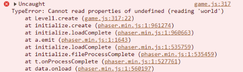

Context: Monday, 6/2/2025
The "Freedom Project" for SEP11 is a year-long project all about making something using JavaScript along with a third-party JS tool.
Content: For my project this year, I worked with Simran from 3rd period. We chose the topic of music, math and games. I chose to independently study Phaser in order to help me make a math & music game called Harmony Quest.
Reflection:
Challenges:
1st challenge: Throughout the MVP, I had a problem with the style of the game. I couldn’t figure out how to center the canvas(the game). In the beginning, I thought I have to put this particular code, where the ‘align-items: center;’ would align the canvas in the center. But it didn’t work. The canvas would just be on the left side of the screen.
On May 7, when I was reviewing Simran’s Pong Remix, I saw her project, her remix is in the center of the screen. I asked her how she did it. She sent me this particular code:
Which leads to...
2nd challenge: When I make my MVP for the game, I ran through a lot of errors. So I learned how to read errors, paying attention to detail, how to be patience, etc.
Takeaways:
Next steps: If I had more time, I’ll manage my time better & would make more levels.